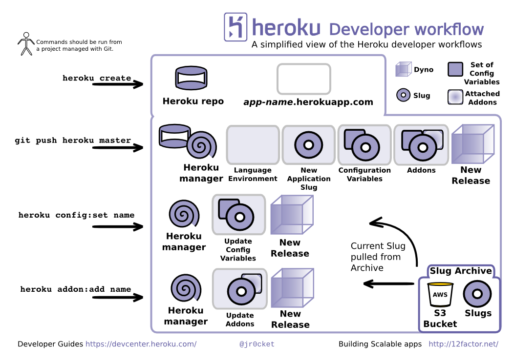
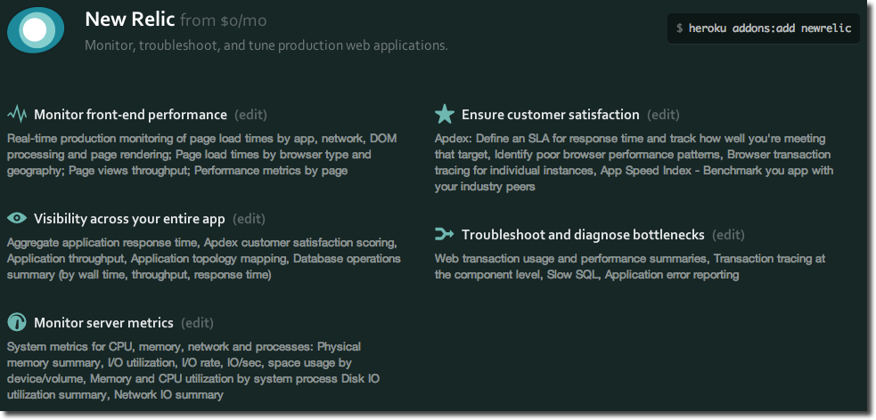
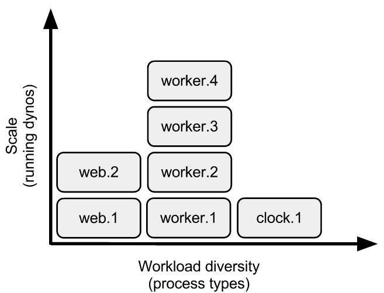

Play in the Cloud with Heroku
John Stevenson
@jr0cket
Abstract
The Play 2 framework is an amazing platform for JVM developers to build upon
- how easy is it to deploy as a scalable application?
- How do you create a development workflow around your play 2 app?
- how to maintain identically configured dev, test, staging & production environments?
This session will show you how to use Heroku, a platform as a service to
- deploy your Play 2 app live in a matter of seconds,
- whist maintaining consistent environments,
- providing instant rollbacks,
- as well as a unified logging
- and a simple approach to scaling.
What is your interest ?
- Play Framework
- Heroku
- Both combined
Play Overview
Play 2 is…
Play Framework is the High Velocity Web Framework for Java and Scala
- lightweight (minimal resource consumption)
- stateless
- RESTful architecture
- AKKA framework
- convention over configuration
- designed for asynchronous programming
- written in Scala (version 2.x onwards)
- project automation with Simple Build Tool (SBT)
- open source project
New stuff with Play 2
- Netty (apache-licensed NIO-based application server)
- no Java EE session per connection
- Persistence layer ORMs (Anorm for Scala, Ebean for Java),
- a templating engine based in Scala
- Integrated unit testing: JUnit & Selenium support included in the core
- SBT as build tool
- LESS & CoffeeScript
- Google Clojure compiler
- Dependency Injection for Controllers
Scala 2.10 new language features:
- Futures and Promises API
- non-blocking, asynchronous composition of services
- allows server to handle more requests as it only creates threads when needed
- similar behavoir achieved with Java when using the Play Functional APIs
Modular Routing making large projects easier to manage
Actors and Akka
One of the most powerful and hardest to understand features in the Play framework
- Akka Actors are incredibly useful for creating highly scalable and concurrent applications.
- Future and type safe declaration of Promise blocks.
- asynchronously run multiple processes
EBean
Ebean is an open source Java Object Relational Mapping tool
- uses JPA Annotations (@entity, @OneToMany …) for mapping
- provides a simple API for fetching and saving object graphs.
Scalable apps with play
- leverage Play!'s modularity
- keeping your app modular
- maintain statelessness as much as possilbe
- RESTful apps can handle more traffic by stacking instances
- need to manage database load of course
Challenges using Play on the Cloud
- consistent deployment workflow
- maintaining identical environments
- understanding how your app performs
- choosing a Cloud service you can trust
Constraints around the JVM
Java apps are traditionally very big, and monolithic
- great if you want to sell big servers
- not good if you want to scale effectively
Developer workflow with Heroku

Manage your project with Git

Creating an Heroku app
In the root of your Git managed project

This creates a Git remote repository and links it with your local one
git remote -v heroku git@heroku.com:repo.git (fetch) heroku git@heroku.com:repo.git (push)
Deploying your code
Push your local commits to Heroku
git push heroku master

Cancelling a deployment
Interrupt the build process by pressing Ctrl + c
- before the build process completes
Pushing Branches
Only a push to the Heroku master branch will trigger a deployment
- merge to master before pushing
- push your local branch to a remote master:
git push heroku yourbranch:master
Constraints on deploying from Git
Very large repositories (over 600MB) are not recommended
- may cause timeouts and slow pushes
Show your repository size:
heroku apps:info
Heroku build cache
The build cache is stored inside your repository,
- remote repo will be bigger than local
Watch you Slug size
Every deployment shows your Slug size
- examine what is taking up space in your app
heroku run bash
Check your repo for binary files
- git is not efficient at storing binary files
- avoid constantly-changing development logs
Removing files committed by accident
git filter-branch
After running that you will have to push with the –force option
- requires coordination among your team.
Forcing a redeploy
git push -f heroku master
Heroku uses Git as a transport so using the force flag is a reasonable practice
- but discuss with the team before doing this
Review the deployment process
Fork the Play 2.x buildpack and tweak if neccessary
Maintaining multiple Environments
Create as many environments as needed
Drive all your deploys from the same source
heroku create my-app-test heroku create my-app-qa heroku create my-app-staging ...
Manage deployment with Git log
Deployments indentified via Git commit hash
git log –oneline –graph –decorate
Manage differences with Environment Variables
heroku config:add DBURL=http//heroku.postgres.com/3574354358904ufddf0jv
Throw away environments
As an environment is quick to spin up you can throw them away when you dont need them
- you still have the code in Git
Managing you app when things go wrong
What are the things that could go wrong
- Operating System problems
- Application Memory leaks
- Committing bugs / regressions
- Security patches
- Pressing the wrong button!
Heroku Manages the system
Heroku manage the system for you:
- re-starting run-away app processes automatically
- recycling apps every 24 hours
- OS patching
- ensuring OS running efficiently
Rollbacks to manage bugs
Whilst you find the root cause, roll back quickly to a known good version
heroku releases heroku rollback v21
Interacting with Production clones
Explore an exact copy of your environment without risk
heroku run bash
Scaling Apps
Scaling resources is easy - although expensive !
Scaling software is hard.
Stateless approach
A stateless approach is more scalable
- minimise the need for locking
- reduces contention
Modular design
Distinct processes allow you to scale parts of your app
- each process needs to scale at different levels
Heroku scales processes
Managed proceses
Managed processes run automatically when the OS starts
- restarted if the system crashes or dies
Web apps can have multiple entry points defined as process types
For Java, your process types might look like this:
Process type Command web java $JAVAOPTS -jar web/target/dependency/webapp-runner.jar –port $PORT web/target/*.war worker sh worker/target/bin/worker
Define multiple process types with Procfile
$ cd myapp/ $ cat Procfile web: bundle exec rails server mongrel -p $PORT worker: bundle exec rake resque:work QUEUE=* urgentworker: bundle exec rake resque:work QUEUE=urgent tweetscan: bundle exec ruby tweetscan.rb cron: bundle exec clockwork clock.rb
Process Model
Then scale up dynos independently for each process type:
$ heroku scale web=4 worker=2 urgentworker=2 tweetscan=1 cron=1 Scaling processes… done
Process types and Dynos
A process type is the prototype from which one or more dynos are instantiated. This is similar to the way a class is the prototype from which one or more objects are instantiated in object-oriented programming.
Billing is done by dyno hours, the clock time for which your collective dyno processes have been on (scale > 0)
Running locally with Foreman
Foreman is part of the Heroku toolbelt
- runs the commands defined in the Procfile on your development machine
Scenario
I have an Heroku app with
5 web processes 2 queue processor 1 low priority background task
If I scale up my dyno, what to I get…?
Understanding your app performance
Monitoring your apps
If you can understand the performce of a single instance of your app, you have a baseline to see how it scales
- need to understand performance through every part
New Relic

Load testing
Load testing plugin
Enhancing Scalability
Managing static assets
Use a CDN for static assets
- much more efficient for any kind of deployment
- better performance on any cloud platform
Managing images
Consider using Amazon S3 Bucket online storage.
- CDN for images in S3 bucket ?? Check Heroku addons
Using a cache
Redis
Memcache
Using CDN
Demo time
Web process using Play
Queue processing have play put something on a queue and this process takes it off the queue and puts it into the database.
Simple java app as the background process
- just printing to the standard out / log every minute
Specific tips and tricks
Databases
- not using H2 for production (obvious one)
- using postgres, tools to manage, migrating data
Postgres setup
Driver Configs
Mixed databases ?
Do you use H2 in dev and Postres in production? Do you have to set up Postgres on your own machine?
Setting up Postgres on Heroku as a dev database
Can run Postgres without a specific app
- connect to it like any other remote db
Tools for your Postgres database
pgadmin3
sudo apt-get install pgadmin3
depends on postgresql-client
Newer versions can be found at: apt.postgresql.org
pgModeller
Production or developer mode
- Play runs in production mode when deployed to Heroku
– how to change this [TODO]
Collaborate on projects with Github
- keep Heroku for deployment or only push master branches
- github has more features for collaboration
- can add github repo to Heroku app so you can see activity
Pipelines for automated deployment
- configure your git repo to deploy to heroku on pushes
Alternatives to Play
Spark micro-framework
Heroku resources
https://blog.heroku.com/archives/2013/6/12/building_apps_efficiently_on_heroku
https://blog.heroku.com/archives/2013/7/15/logging-on-heroku https://blog.heroku.com/archives/2013/7/22/oauth-for-platform-api-in-public-beta https://blog.heroku.com/archives/2013/7/25/releases-and-rollbacks
https://blog.heroku.com/archives/2013/4/26/introducing_production_check https://blog.heroku.com/archives/2013/7/11/running-production-apps-on-heroku https://blog.heroku.com/archives/2013/7/8/addons_production_apps
https://blog.heroku.com/archives/2013/8/1/video_and_slides_optimizing_production_apps_on_heroku https://blog.heroku.com/archives/2013/7/16/introducing-how-heroku-works
https://blog.heroku.com/archives/2013/7/10/heroku-pipelines-beta
Building scalable apps - 12 Factors
One codebase, multiple environments
- Version controlled source code
- Pushed securely and consistently to environments

Explicitly declare & isolate dependencies
- Use build automation tools to manage dependencies
- Consistency of builds
Store configuration in each environment
Database connections, security tokens, etc.
- avoids adding config into your codebase
- prevents wrong environment from being changed
- more secure way of managing sensitive config data
All services are attached resources
Databases, message queues, cache, local services, 3rd party services

Development workflow
Applications should be
- self-contained
- self-describing
- independent entities.
Declaratively define dependencies
- no reliance on existing system packages
- no dependencies defined in source code
Use of build automation tools
Use of environment variables
heroku config:set CLI
define external dependencies without modifying the app's source code.
- database connections and security access
run your app in the same way locally as your app does in production
Runtime
Stateless environment
- ephemeral filesystem which ensures a stateless runtime
fast process startup/shutdown
the process model
- running your app as one or more lightweight processes,
Avoid a monolithic executable, granularly scale the app to match a diverse workload a sort of in-app horizontal scaling.
The Procfile, your app’s process manifest, informs the runtime of your app’s unique composition and tools like Foreman (locally) and the Heroku dyno manager (remotely on Heroku) manage its execution.
Management - App interaction
execute user-initiated tasks against the app
- database migration
- interacting with app via REPL
Heroku allows you to provision a one-off dyno, an isolated copy
heroku run bash
Management - Monitoring
see the app's runtime log output
heroku logs –tail
Dynos

Thank you
Play Framework Heroku and Heroku Postres
12Factor.net
WIP
Heroku Scalability
- HTTP stack fully supports HTTP 1.1
- long polling
- chunked responses
- async multi-connection webservers
- isolation
- erosion-resistance (seemless patching)
Slide with background image
- bulletpoint
- dont go crazy
Sub-slide - srolls vertically from slide above
Some source code using hightlits.js
(def clojure-devs "love brackets")
Slied with code
git init
Slide with Colour - overriding the theme
I love red.
Hightliht text as a fragment of the slide
Fragments in Reveal.js
Press the "Down" key on the page or the down arrow to trigger fragments
- Create
- Fragment
- At Ease
Fragment captions
#+ATTR_REVEAL: :frag
* Create
* Fragment
* At Ease
Reveal.js Can Alert
Change slide style to wake up the sleepy audience.